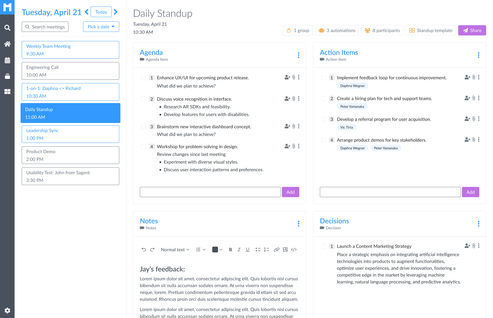
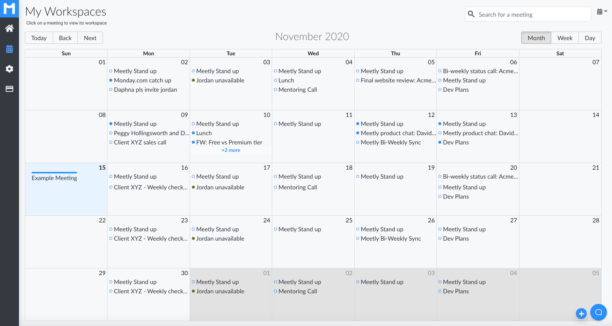
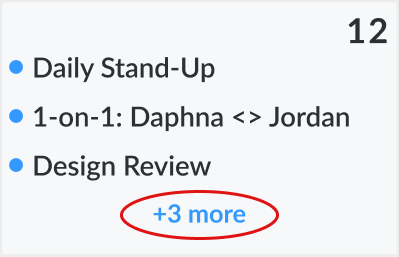
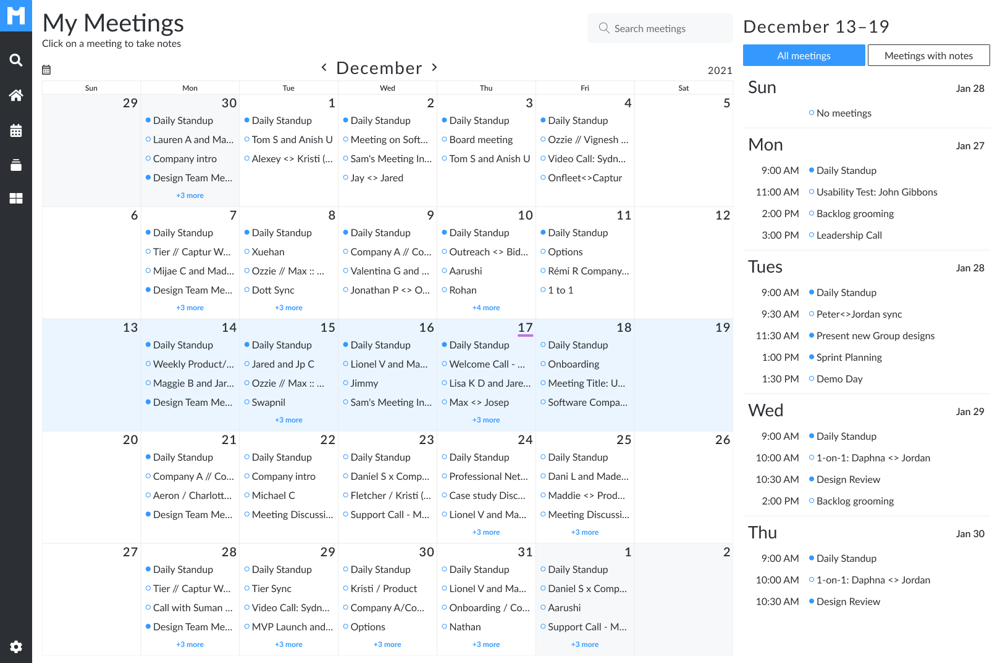
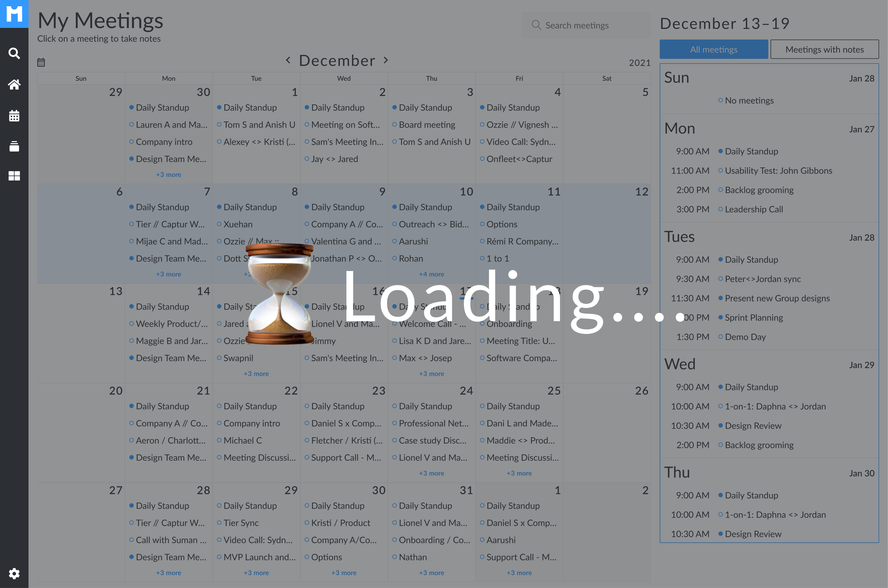

Re-designing navigation at a meeting notes SaaS startup
These changes resulted in users logging in and finding desired information 50% faster.
Company
Meetly, a B2C SaaS startup that built a meeting note automation platform
my role
Solo designer working with PM and 3 engineers
Duration
3 months

☝️
The initial screen users see after logging into Meetly, a meeting notes platform powered by a user's calendar.
This final design opts for a single-day view (defaulting to today's date) and helps users more quickly navigate to the meeting they are looking for.
Company mission 🏆
Promote good meeting "hygiene"
Meetly's mission was to reduce inefficient and unnecessary meetings.
Strategic goal 🎯
Remove friction/impediments to best practices
By inserting ourselves into users' existing workflows we hoped to leverage organizational work they were already doing in their calendars.
north star metric ⏱️
Time it takes a user to find desired meeting
The sooner we could shepard a user to the meeting they were looking for, the more likely they were to adopt the tool and convert to a paid account.
UX impact 💪
50% faster navigation from login screen to target meeting context
It took ~5 seconds for users to find their desired meeting when presented with an entire month's worth of calendar events.
That average time dropped to less than 3 seconds with the final design.
business impact 📈
Paid conversion incread by 7%*
* This increase is merely a correlation, as many improvements to the product were made during this same period.
This increase occurred over the 4 months between when design work (for this case study) began and ended one month after final designs shipped.
How I got there ☝️
The initial prototype leveraged users' familiarity with their calendar
Because users already know where their meetings were visually located in their calendar, I thought this would help them find their target meeting faster.

Why a calendar?
Users already know where key meetings appear visually in their calendar
Leveraging users' mental map from Google or Outlook calendars would help them find their meetings faster.
technical limitations
Only three meetings fit on a calendar day ❌
This was a limitation of the 3rd party React library our developers were using.

Key insight 💡
80% of users clicked on a meeting Today or Tomorrow
Agenda items were typically added within 24 hours of a meeting starting. Often times they were added minutes before.
Version 2
what I changed
Re-centered design around Today and Tomorrow's meetings
This way the target meeting was above the fold (or just below it).
Why this change?
Give prime real estate to most sought-after meetings
This also accommodated users with lots of meetings –– our target audience.
new problem during testing
With infinite scroll, users lost context ❌
Adding a "Jump to Today" button helped, but ideally, they would not get lost in the first place.
Version 3
What I changed
Fixed infinite scroll problem by limiting meeting list to 1 week of events
This solved the infinite scroll problem causing users to lose context.

Technical Problem in Production
Calendars with lots of meetings caused performance issues ❌
This design required waiting on network calls from Google/Outlook as well as Meetly servers.
Large payloads meant long loading times.

Final design
What I changed
Switched to a single-day view
Instead of showing a full month's worth of meetings, I opted for a single-day view, defaulting to today's date.
Why this design
Optimizes for 80% of visits
& faster page loads
Only loading today's meeting made for a snappier experience.
And tomorrow's meetings were just a click away.
What I learned
Evaluative research
Better to test an idea early than perfect an imperfect "solution"
My key design decisions came after observing users interact with what I'd designed –– whether it was a Figma prototype or live code in a staging or production environment.
I spent a lot of time iterating in Figma on particular designs, only to later observe user behavior that took the overall design in an entirely unexpected direction.
creativity
Technical constraints can spur creativity
My most creative design moments came after technical constraints limited what (I thought) I wanted to do.